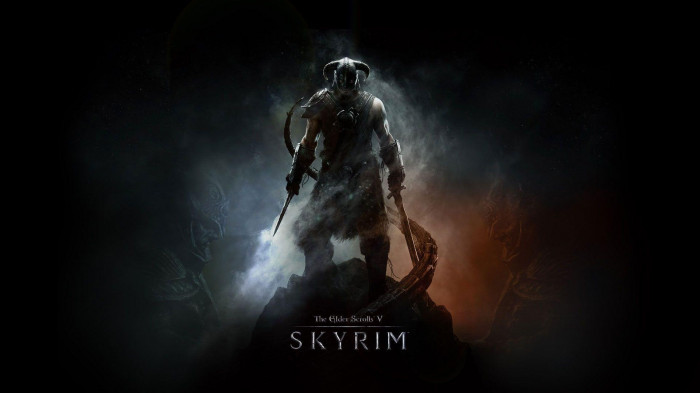
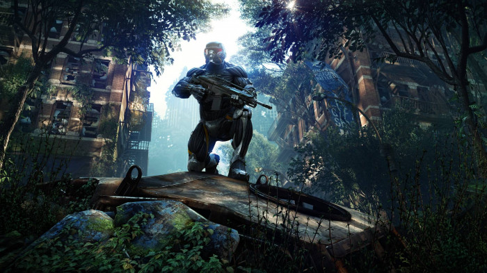
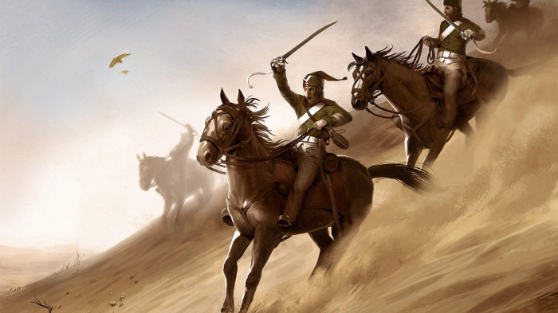
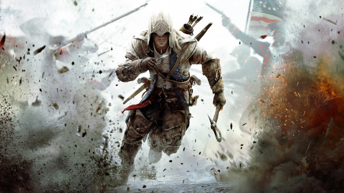
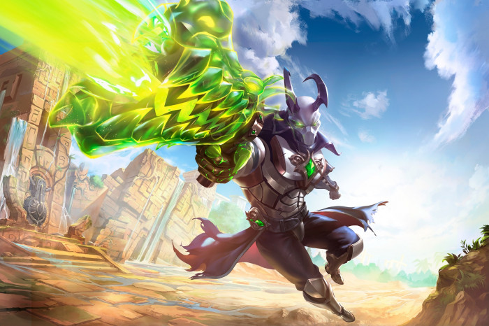

Il buon vecchio Skyrim, che dire. Un ottimo open world, lascia abbastanza spazio alla personalizzazione del giocatore. Ha un discreto sistema di combattimento. Personalmente ho riscontrato qualche problema nella difficoltà dei diversi nemici del gioco, si passa da tizi qualunque che uccidono istantaneamente il giocatore al boss finale che considero tra i più scarsi boss finali della storia. Penso che comunque molti giocatori ricorderanno Skyrim per i suoi bug, del resto non capita in ogni videogame che tu sia impossibilitato a fare una missione perchè il tizio che deve farla partire è scomparso, oppure che un mammuth precipiti dal cielo e ti cada in testa. Skyrim non sarebbe tuttavia Skyrim senza i suoi bug.
Ultra-buggato 
Il grande Crysis. Chi ci ha giocato quando è uscito il primo capitolo forse se lo ricorda come un demolitore di schede grafiche.Uno sparatutto che si distingue dai suoi simili per la presenza dell'armatura in dotazione al nostro giocatore che gli consente di diventare invisibile, super-veloce, super-forte, super... quello che volete. La trama inizialmente sembra il classico Usa buoni vs Coreani cattivi, ma ha un colpo di scena che, se non siete persone come me che continuano ad auto- spoilerarsi le cose, apprezzerete.
Super-da giocare 
La saga dei Total War. Non li ho giocati tutti, ma alla fine dei conti sono un po' tutti la stessa cosa. RTS molto interessanti, perfetti per chi vuole mettere alla prova le proprie capacità strategiche. Combatti contro Napoleone, affronta i nativi, scontrati con Attila, butta giù quel troll, aspetta cosa? I Total War hanno luogo in diverse epoche storiche e negli ultimi tempi hanno fatto un salto nel mondo fantastico di Warhammer. Divertenti fino a quando non vieni invaso da una potenza che vuole il tuo piccolo territorio in mezzo al nulla. Concedono anche qualche curiosità storica che non guasta.
Alla pugnaaa 
Quale videogamer non ha mai giocato, anche per sbaglio, ad un Assassin's Creed? La saga degli assassini ha attirato a sè milioni di giocatori. Spettacolare quell'arrampicarsi, saltare da un palazzo all'altro, uccidi Tizio, uccidi Caio, segui Pinco Pallino, a dir la verità, erano una gran rottura quelle sequenze in cui dovevi seguire qualcuno. Io ho giocato solo la trilogia di Ezio Auditore(gran personaggio eh, mi deve però ancora spiegare perchè uccide tutti e poi si tira indietro quando deve uccidere quello che veramente doveva essere ucciso, ma vabbè) ed un po'del 3, che ad un certo punto mi ha stancato, perchè è sempre la stessa cosa. Ecco, il problema degli Assassin's Creed è che fai sempre le stesse azioni, ma allo stesso tempo, nel momento in cui esci da questo loop, non senti più di star giocando ad un Assassin's Creed, come successo a molti giocatori con gli ultimi titoli.
Assassinooo 
Come ultimo gioco ho scelto un gioco online. Chi conosce questo videogame lo considera la brutta copia gratuita di Overwatch. Certo, il povero Paladins avrà i suoi limiti rispetto al suo più conosciuto rivale, ma secondo me ha il suo da dire. Divertente, meno confusionario a mio parere rispetto ad Overwatch, scelta abbastanza vasta di personaggi. Dato il minor numero di giocatori può vantarsi di una comunità meno tossica rispetto a quelle di Ow oppure di Lol, anche se purtroppo non è esente da determinati elementi. Secondo me rappresenta una valida alternativa per coloro che non vogliono spendere per Ow, o che comunque non vogliono proprio giocarci, dato che è uscito il sequel, stavolta gratuito, e per chi vuole giocare con amici divertendosi.
Da tenere d'occhio 